Comunicado oficial. Leelo hasta el final. #emprendedoresargentinos #comerciantes #pymesargentinas #tranqueradigital
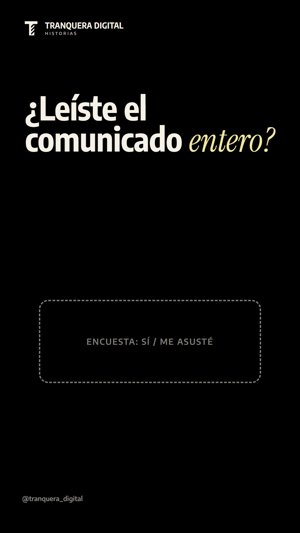
Historia del día · 19:00
Sticker: Encuesta: Sí / Me asusté
Sticker: Encuesta: Sí / Me asusté
Toda la quincena junta para revisar: 10 reels con voz y subtítulos, 2 carruseles y una historia por día con su sticker. Cuando esté todo bien, decime “listo, programalo” y lo programo de una en Instagram y Facebook.
Comunicado oficial. Leelo hasta el final. #emprendedoresargentinos #comerciantes #pymesargentinas #tranqueradigital

Cada vez más gente le pregunta a ChatGPT adónde ir. Si tu negocio no tiene página, la IA tiene poco de dónde sacarte. #emprendedoresargentinos #pilates #chatgpt #comerciantes #tranqueradigital
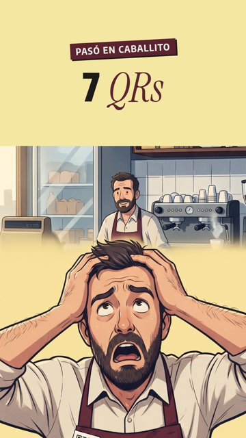
Un QR para cada cosa no es un sistema. Una página con todo adentro, sí. #comerciantes #gastronomia #emprendedoresargentinos #negociolocal #tranqueradigital
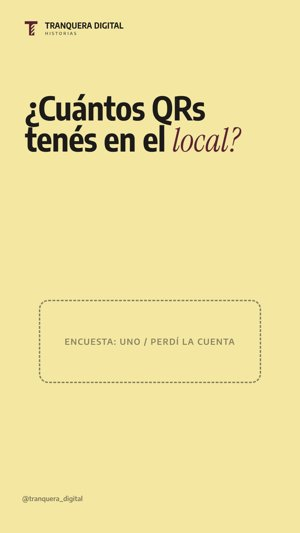
Dos panaderías iguales en la misma cuadra. Para Google, una abre a las 7 y la otra está cerrada. #comerciantes #panaderia #emprendedoresargentinos #googlemaps #tranqueradigital
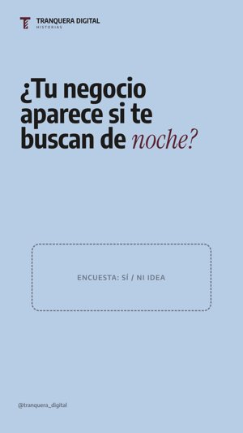
El bot contesta lo que siempre te preguntan. Vos leés los pedidos a la mañana. #emprendedoresargentinos #whatsappbusiness #comerciantes #pymesargentinas #tranqueradigital
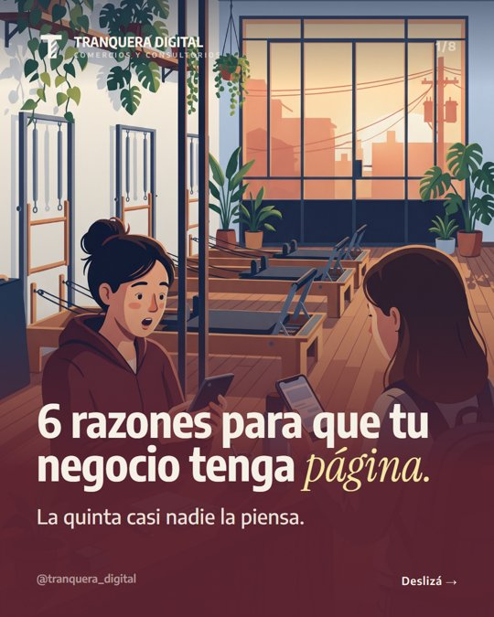
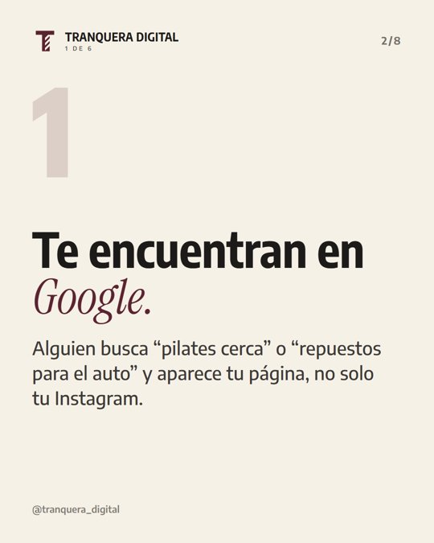
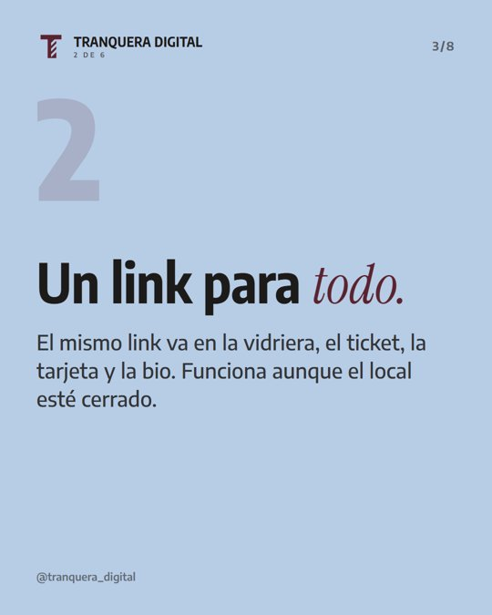
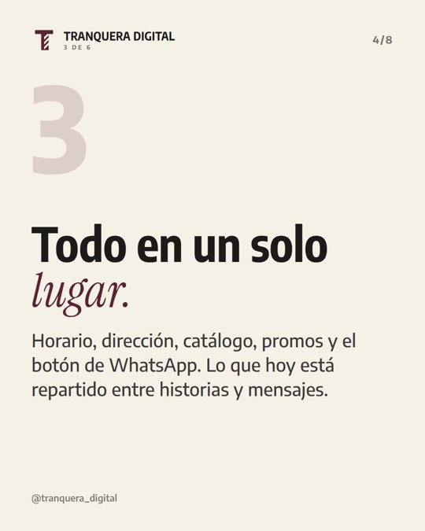
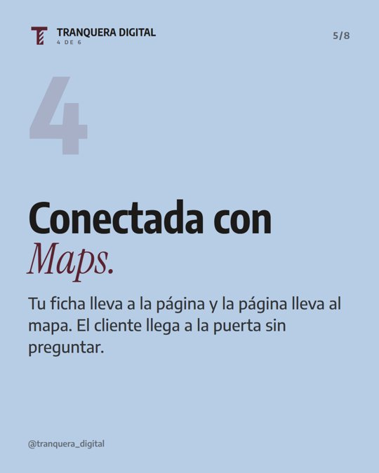
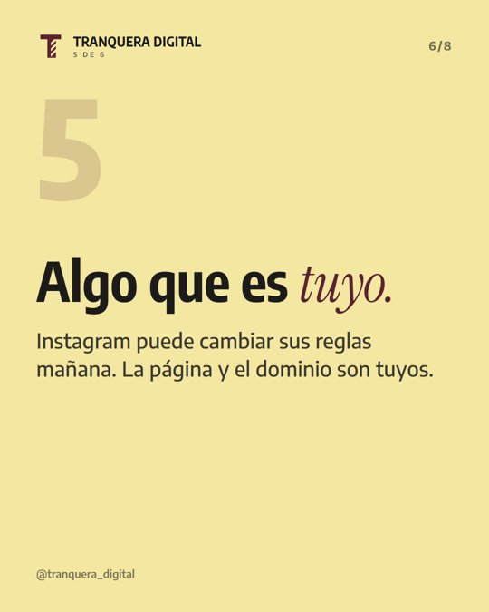
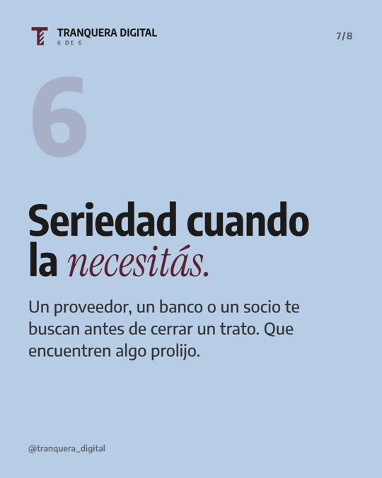
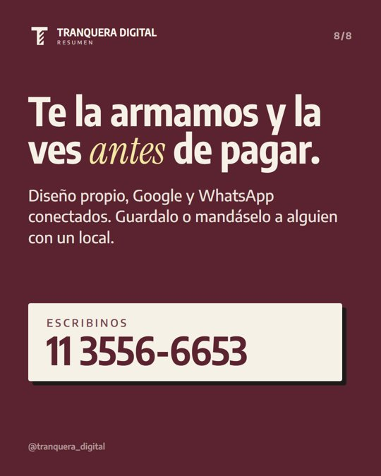
6 razones para que tu comercio o consultorio tenga página. La quinta casi nadie la piensa. #comerciantes #emprendedoresargentinos #profesionales #pymesargentinas #tranqueradigital
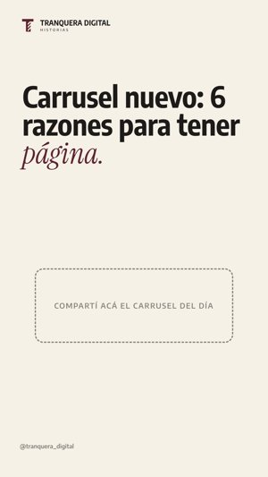
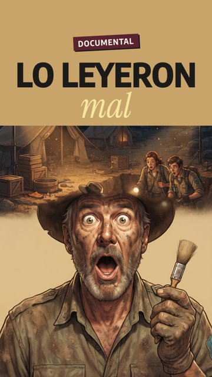
Lo leyeron mal durante 2000 años. #emprendedoresargentinos #historia #comerciantes #tranqueradigital
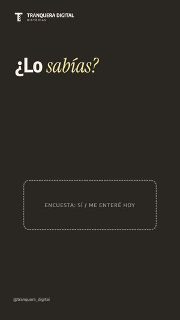
El Instagram de tu negocio no puede depender de que alguien tenga un rato. #emprendedoresargentinos #comerciantes #veterinaria #coronelsuarez #tranqueradigital
Relevancia, distancia y prominencia. La segunda no la podés tocar. Las otras dos, sí. #comerciantes #emprendedoresargentinos #googlemaps #negociolocal #tranqueradigital
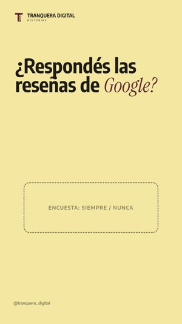
Una recomendación que no te encuentra termina en otro consultorio. #profesionales #kinesiologia #emprendedoresargentinos #coronelsuarez #tranqueradigital
Gancho, qué se lleva, qué te hace distinto y un solo botón. Guardalo para cuando armes tu página. #emprendedoresargentinos #comerciantes #pymesargentinas #marketingparanegocios #tranqueradigital
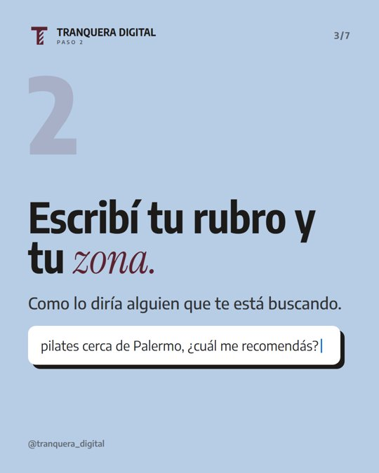
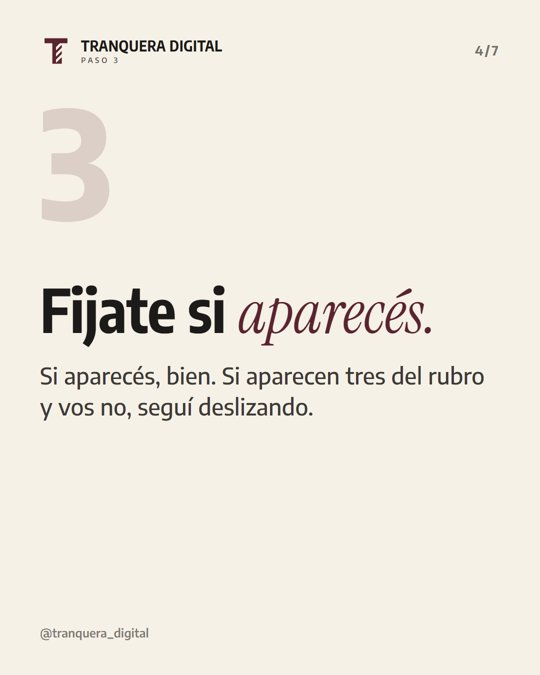
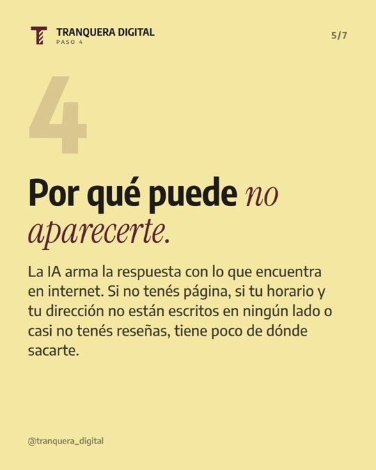
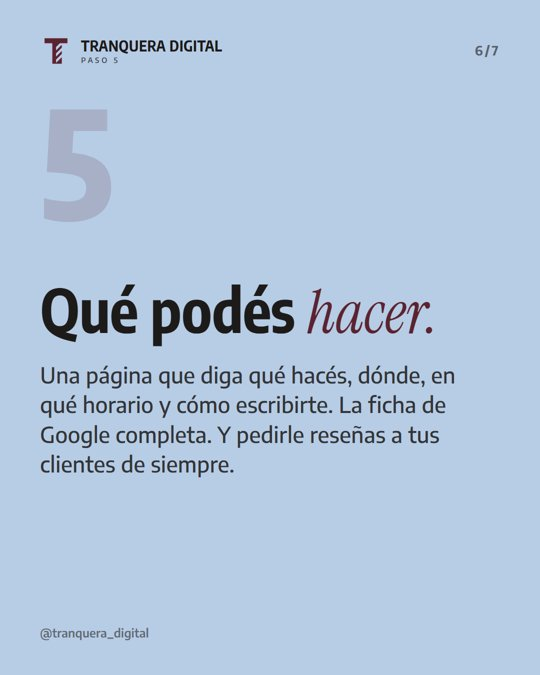
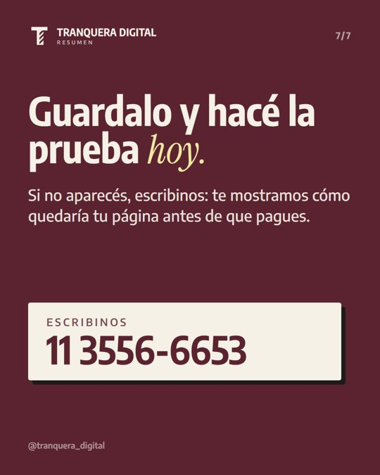
Hacé esta prueba hoy: preguntale a ChatGPT por tu rubro y tu zona. ¿Aparecés? #emprendedoresargentinos #chatgpt #comerciantes #negociolocal #tranqueradigital
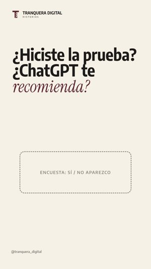